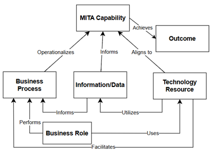
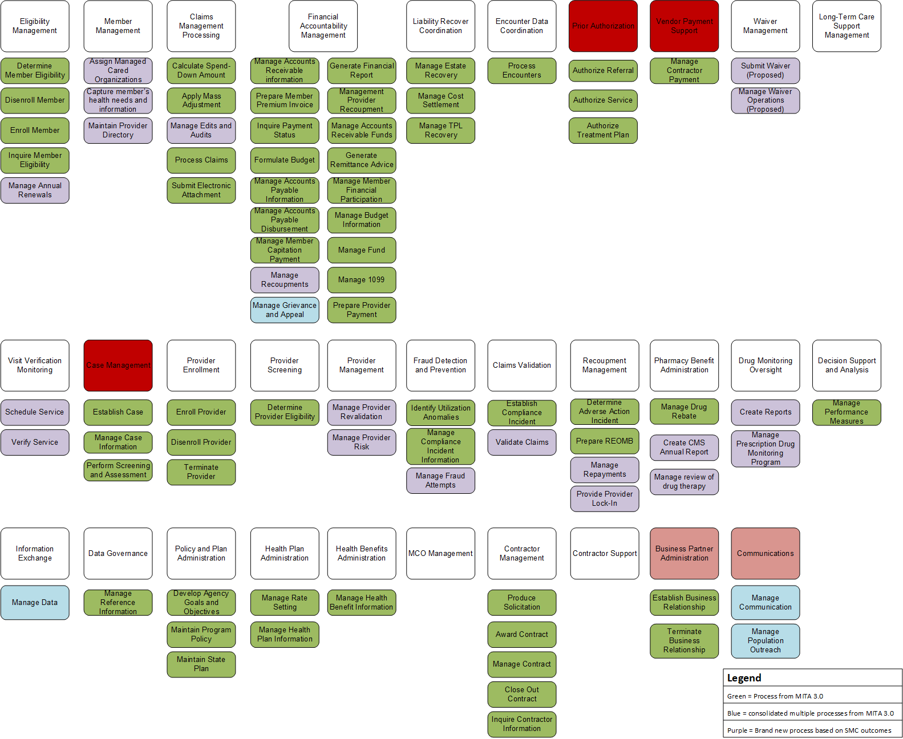
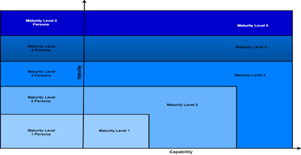
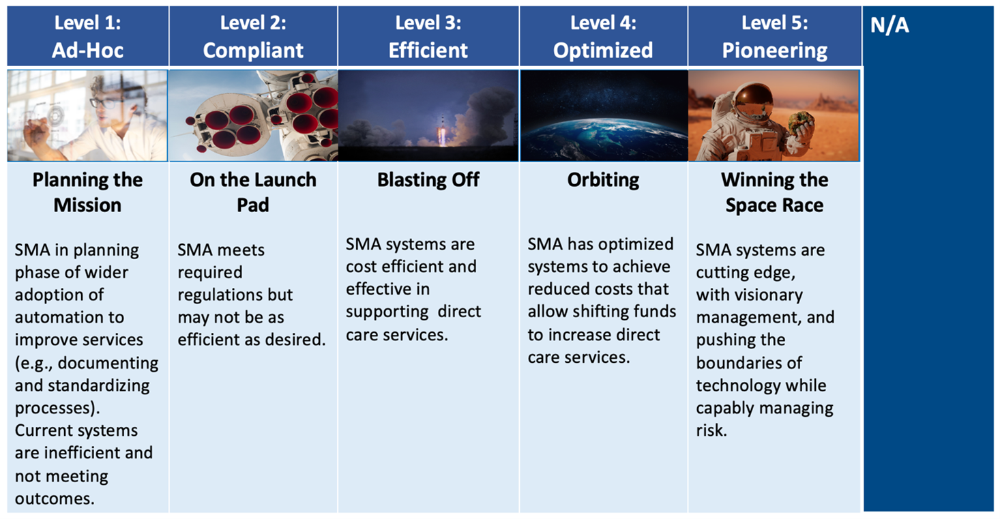
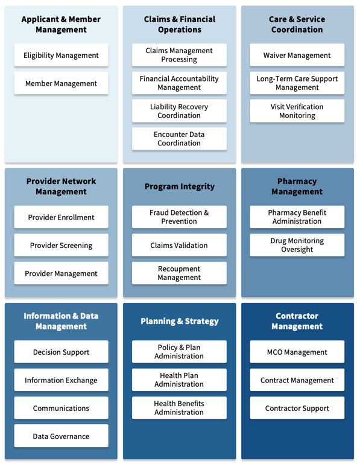
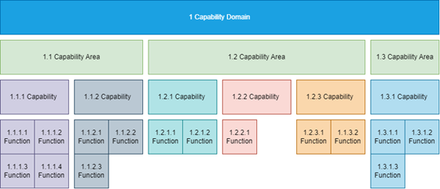
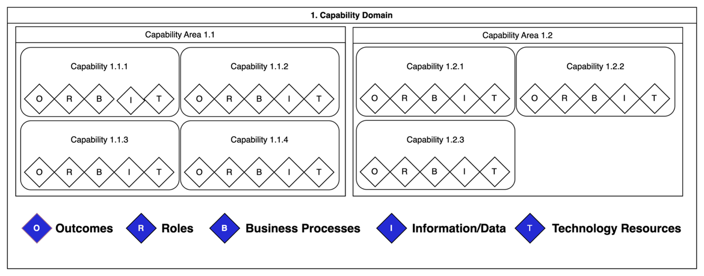
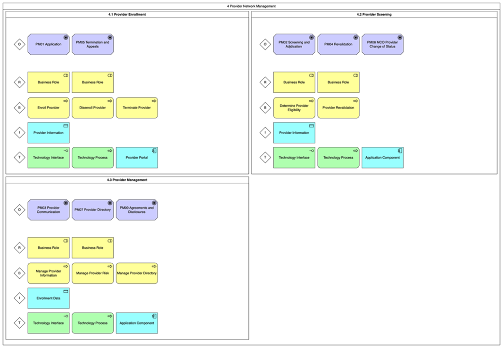

MITA Capability Model
What is the MITA Capability Model?
Overview
A capability model is a conceptual way to organize the key capabilities an organization performs. The Open Group Architecture Framework defines a capability as the ability of an organization, individual, or system to accomplish a specific outcome or goal. The focus is on what a business needs to achieve its goals, rather than how those goals are achieved. A State Medicaid Agency needs its Medicaid Enterprise System and people to perform specific capabilities to ensure services are effective, efficient, and economical for their enrollees and providers. This perspective allows for business planning from different viewpoints, facilitating strategic alignment and operational efficiency.
The MITA Capability Model allows State Medicaid Agency architects, systems analysts, executives, and program staff to use this same approach to representing the components of their Medicaid program in a way that can help reveal gaps and provide insights on what new or enhanced capabilities might be needed to close those gaps.
The MITA 4.0 approach to the Capability Model draws inspiration from The Open Group Architecture Framework principles and seeks to preserve the MITA 3.0 concept of business capabilities to ensure a focus on the essential functions and outcomes an organization seeks to achieve. Capabilities are inherently business-focused, emphasizing results and the strategic objectives that drive an organization forward.
This capability-centric approach provides State Medicaid Agencies with a powerful tool to align their information and technology resources, as well as their operational processes, with overarching strategic business objectives. By focusing on capabilities, State Medicaid Agencies can better align their information and technology resources and processes with their strategic business goals, ultimately improving their insight into how to improve the outcomes their Medicaid Enterprise Architecture produces.
Figure: MITA Capability Meta-Model
MITA 4.0 Capability Model and ORBIT
Within the context of MITA, a capability can be defined as the ability or capacity of a State Medicaid Agency to achieve a desired outcome under the Standards and Conditions within 42 CFR 433.112. A capability may currently exist in an operational state or be envisioned for future development. Through careful planning, capabilities defined in this way can be matured and refined over time to become more effective and efficient. They can be organized and detailed at various levels of abstraction, providing precise descriptions for operational purposes or more generalized views for strategic planning.
To fully define a business capability, it is essential to understand how it is realized through the integration of outcomes, people, business processes, information, and technology resources of a State Medicaid Agency. While these elements of the capability can change regularly, the capability itself should endure over longer planning horizons, supporting the long-term alignment of business and IT and the achievement of increasingly beneficial business outcomes.
The MITA Capability Model orients the outcomes, people (roles), business processes, information resources, and technology to define each MITA Capability. MITA 4.0 uses the acronym ORBIT to show the relationship between these components:
- Outcomes
- Roles
- Business Processes
- Information and Data
- Technology
Outcomes (O)
MITA encompasses CMS-required outcomes such as the Streamlined Modular Certification Outcomes and state-specific outcomes. The sole criterion for an outcome to meet this definition is that it must be a goal of a State Medicaid Agency and be achieved through a capability. For MITA, outcomes are linked to capabilities, as they represent the results achieved through the integration and execution of various elements that make a capability.
Reference Outcomes-based planning artifacts
Roles (R)
Roles represent the people, including stakeholders and partners, involved in delivering a business capability. A single organization group may be wholly responsible for delivering the capability, or multiple business entities may share the delivery of a particular business capability. People, in their role with the State Medicaid Agency, perform business processes using information and technology resources. They require skills and knowledge resources to achieve outcomes and should be actively engaged as partners in the development or enhancement of any capability they help deliver.
Reference Roles artifacts
Business Processes (B)
Each business capability may be performed through a range of business processes that detail the activities, decisions, and interactions between roles (the how) associated with delivering the capability. Documenting and analyzing the efficiency of the processes help to optimize the business capability.
MITA captures the standard processes that can be used to create your state specific processes through Business Process Models. A Business Process Model outlines what an organization does, including the events that trigger processes and the results they produce. MITA adopted a process-oriented model to support the diverse structures, policies, and operations of over 51 State Medicaid Agencies. This approach views business activities cross-functionally, organizing them as responses to events rather than being constrained by organizational structures. By focusing on activities rather than who performs them or where they occur, BPM enables process improvements and transformative changes. It provides a universal framework centered on Medicaid Enterprise activities, independent of organizational design, implementation constraints, or external interfaces.
MITA 4.0 Business Process Models were updated by reusing and combining MITA 3.0 processes as well as creating new processes where needed.
Figure: Diagram of MITA 4.0 Capabilities mapped to Business Process Models
Information/Data (I)
Information/data represents the data, knowledge, and insight consumed or produced by the business capability (as distinct from IT-related data entities). This may include information that the capability exchanges with other capabilities to support the execution of the capability. Examples include information about customers and prospects, products and services, business policies and rules, sales reports, and performance metrics. Information/data inform the Business Capability, answering questions, and supporting business rules.
Reference information architecture artifacts
Technology Resources (T)
Business capabilities rely on a range of tools, applications, systems, and services for successful execution. Technology Resources use Information/data to facilitate Business Processes. Such resources may include:
- Modular software applications
- Cloud or on-premise infrastructure
- Microservices
- Analytics
- Customer portal
Reference technology architecture artifacts
The ORBIT framing connects all the MITA architecture models and their individual components which allows us to reveal gaps in the individual components of the architecture and understand their impact on the integration of the architecture components at the capability level.
Relationship of MITA Capabilities to Maturity
Maturing a capability means improving and evolving the Medicaid Enterprise System over time to make it more efficient, effective, and aligned with the organization's goals. It involves enhancing processes, technologies, and practices to move the system from its current state ("As-Is") to a more advanced and optimized future state ("To-Be").
In essence, maturing an enterprise system is about transforming it into a more sophisticated, effective, and future-ready version of itself. This process is often guided by a maturity model, which provides a structured framework for measuring progress and setting goals for improvement.
A maturity model is a tool used to track how a business or specific function improves and evolves over time and in terms of how advanced its processes become. Typically, architects and designers use maturity models to plan changes and improvements for a single organization, such as a state Medicaid program, setting goals and measuring progress. However, MITA is different because it applies to all State Medicaid Enterprises across the U.S., including states, territories, and the District of Columbia. While these programs share similarities, they also have unique differences.
MITA 4.0 uses a maturity model to set clear boundaries and provide guidance for improving State Medicaid Enterprises. It helps them move from their current level of operations ("As-Is") to higher levels of capability over time. To create this model, the MITA team followed industry best practices and used the Concept of Operations to define what the future ("To-Be") environment should look like for State Medicaid Enterprises.
The image below depicts a visual representation of the relationship between maturity levels and capability levels across a progressive scale. The overall structure demonstrates how maturity and capability increase in tandem, with each successive level representing greater sophistication and effectiveness.
Figure: Relationship of MITA Capabilities to Maturity
MITA 4.0 Maturity Scale and Personas
MITA 4.0 adds personas to explain maturity levels and make abstract concepts more relatable, understandable, and actionable. Personas are fictional, representative profiles an organization that embody specific characteristics and behaviors. MITA 4.0 adopted personas for explaining maturity levels to:
- Improves Communication- Personas make discussions about maturity levels more engaging and accessible, especially for non-technical audiences. Instead of diving into technical details, you can tell a story about the organization’s journey, making it easier for everyone to understand and participate in the conversation.
- Supports Planning and Decision-Making- Personas help stakeholders identify where they currently stand and where they want to go. By aligning their organization with a persona at a specific maturity level, they can better plan the steps needed to move to the next level and prioritize improvements based on the persona's challenges and goals.
In summary, personas bring maturity levels to life by turning abstract concepts into relatable stories. They help stakeholders understand where they are, where they want to go, and what steps are needed to get there—all while keeping the focus on real-world needs and outcomes.
Figure: MITA 4.0 Maturity Scale with Personas
Additionally, State Medicaid Agency users of the MITA 3.0 maturity models were consulted to understand desired changes. The MITA 4.0 Maturity Model scale keeps the use of 5 levels of maturity, and updated key words. The scale now allows for a “non-applicable” rating that does not factor into maturity ratings. Additionally, when assessing the maturity of a capability, MITA 4.0 will now allow States to average maturity scores and will not tie the rating to the lowest level of maturity to allow States to show incremental progress.
Why use the MITA Capability Model?
MITA 3.0 defined a capability as the level of maturity of a set of business processes within a business category. By focusing on “how” Medicaid Enterprise System operate MITA 3.0 helped State Medicaid Agencies identify ways to improve and mature their business processes, but it did not link those processes with the outcomes they are intended to achieve or ensure better alignment of the information and technical architectures to business outcomes. The addition of the MITA capability model to the MITA 4.0 business architecture addresses that by providing the conceptual linkages needed to elevate the strategic vantage point of the MITA Framework. To guide this change, we present a definition, description, and approach to modeling business capabilities, based on the widely used capability models contextualized for Medicaid Enterprises.
The business processes that operationalize MITA capabilities remain foundational to characterizing the business architecture and are a constituent part of any MITA capability. They provide essential information on how capabilities are operationalized and should continue to be a routinely utilized reference model for State Medicaid Agency business process mapping. They are found within the Business Process Models in MITA 4.0.
How to use the MITA Capability Model?
Understanding how the MITA Capability Model works is important to obtaining the most value out of many of the other tools and artifacts in the MITA framework, such as the MITA Maturity Model and the Business Process Model. The MITA Capability Model provides a structured way for State Medicaid Agencies to identify, conceptually model, and improve the capabilities needed for efficient Medicaid operations.
It is important to note that MITA 4.0 does not endeavor to specify all capabilities State Medicaid Agencies may need to administer Medicaid programs; instead, this version of MITA focuses on the capabilities that are most closely oriented towards achieving the CMS-required outcomes. In this way MITA 4.0 provides a reference model for State Medicaid Agencies to model other capabilities that may be needed to achieve their other goals such as state specific outcomes, or other state priorities while providing more guidance within the MITA Framework to support modular.
Capability Mapping
Capability mapping is a strategic tool that enables organizations, such as State Medicaid Agencies, to systematically identify, organize, and visualize the key capabilities necessary to achieve their objectives. Within the MITA framework, capability mapping provides State Medicaid Agencies with a method of developing comprehensive views of the functions and processes required to deliver Medicaid services effectively.
To begin the capability mapping process, State Medicaid Agencies should first identify the core capabilities that align with their strategic objectives, focusing on what the organization needs to achieve rather than how those goals are accomplished. This involves listing all necessary capabilities and understanding the desired outcomes they support.
Next, these capabilities should be organized into domains and areas that reflect their strategic importance and interrelationships. Visualizing these capabilities through diagrams or maps helps stakeholders understand the roles, processes, technology resources, and information/data involved in executing each capability. This structured approach not only highlights areas for improvement or investment but also ensures that organizational efforts are strategically aligned with desired outcomes.
The benefits of capability mapping are multifaceted, offering State Medicaid Agencies a clear pathway to strategic alignment and gap analysis. By visualizing capabilities, organizations can identify operational gaps and determine what new or enhanced capabilities are needed to close those gaps. This visualization also improves communication among stakeholders by providing a clear and concise representation of the organization’s functions. To refine capabilities, State Medicaid Agencies should analyze current operations, assess the efficiency of underlying processes, and optimize them to enhance capability effectiveness. Additionally, capability mapping serves as a foundation for heat mapping, a tool that can be used within the MITA Framework to visualize the maturity of each capability evaluated in the State Self-Assessment. State Medicaid Agencies can enhance their capability maps by overlaying heat maps, using color coding to highlight various aspects beyond maturity levels, such as areas of strength and weakness.
Regular updates to these maps allow State Medicaid Agencies to monitor progress and ensure resources are allocated effectively to achieve strategic goals. The MITA framework includes examples of capability maps based on CMS-required outcomes, serving as a reference model for State Medicaid Agencies to develop their own capability maps tailored to state-specific goals and priorities. By leveraging the reference models provided by MITA, State Medicaid Agencies can ensure their capability mapping efforts are aligned with both federal requirements and state-specific priorities.
Figure: MITA Capability Domain Map
Organizing Capabilities
A block diagram can provide a detailed view of a capability and a unified overview of all Medicaid Enterprise System components. It connects the capability to business processes, roles, technical resources, and information through functional decomposition.
Figure: MITA Capability Organization Model
Using a block diagram to break down a capability into its parts can visually show relationships and dependencies. This helps clarify how each component supports the overall capability, making analysis, optimization, and alignment with organizational goals easier.
We use this same method to present this top-level view of the capabilities required to achieve CMS-required outcomes. From this view increasingly detailed models can be constructed.
How to use ORBIT to Visualize the MITA Capability Model
The MITA framework represents capabilities visually through a layered model that represents a capability of being composed of sub-capabilities and the outcomes, roles, processes, information, and technology resources (ORBIT) that support the business in sustaining the capability.
Each layer upward represents more strategic capabilities, while each layer downward shows the detailed operational elements of a capability. While this version of MITA does not aim to provide a full operational or tactical view, State Medicaid Agencies can expand these layers through functional decomposition to better understand their operations.
Figure: ORBIT Visualization of a Capability
Figure: Example of Provider Network Management
Use Cases
TBD